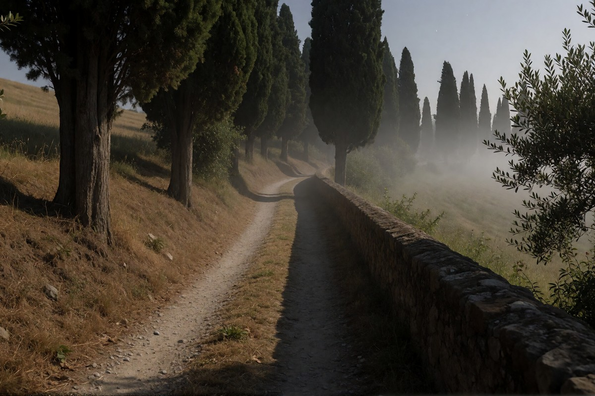

Cronaca · 19 novembre 2026
Mostro di Firenze, la procura chiede il Dna ai parenti delle vittime

Quarantuno anni dopo l'ultimo duplice delitto, i carabinieri convocano in caserma i familiari ancora in vita delle coppie uccise. L'obiettivo è ricostruire il profilo genetico delle vittime per escluderlo dalle tracce sui vecchi reperti.
di Franco Zanghì
La procura di Firenze torna a dare la caccia al Mostro, e questa volta lo fa con il Dna. Le due sostitute titolari del fascicolo hanno invitato i parenti ancora in vita delle coppie uccise fra il 1968 e il 1985 a dare un campione del loro patrimonio genetico. Lo ha scritto La Nazione, e lo hanno ripreso l'ANSA e Open. Sono i carabinieri del nucleo investigativo di Firenze a convocarli in caserma, uno per uno.
Otto duplici omicidi, nelle campagne intorno a Firenze, dal Mugello a San Casciano. A più di 40 anni dall'ultimo, la verità processuale è ancora incompleta.
A che cosa serve il Dna dei parenti
Secondo l'ANSA serve a ricostruire il profilo genetico delle vittime, per poterlo escludere: quello che resta sui vecchi reperti potrebbe essere dell'assassino, o degli assassini. Più vittime, scrivono gli atti, lottarono contro chi le uccise.
Il programma scientifico è affidato al biologo forense Ugo Ricci, lo stesso che con le sue analisi ha contribuito a far riaprire il caso di Garlasco. Si riaprono gli scatoloni conservati per decenni negli archivi giudiziari: resti di abiti, i coprisedili delle auto, perfino la tenda dei due turisti francesi uccisi a Scopeti nel 1985.
Si riparte dal 1974
Il punto di partenza è il delitto del 14 settembre 1974 a Sagginale, nel comune di Borgo San Lorenzo, in Mugello, dove furono uccisi un ragazzo di 19 anni e la sua fidanzata: è uno dei delitti della serie rimasti senza una sentenza definitiva. Open racconta che tornano sotto esame anche le fodere dei sedili della Fiat 127 su cui i due si erano appartati. La sorella del ragazzo ha già dato il suo campione di saliva.
Per quel delitto era stato processato Pietro Pacciani, il contadino di Mercatale, morto nel 1998 prima del nuovo processo d'appello: una condanna definitiva per lui non c'è mai stata. Secondo l'ANSA gli investigatori potrebbero confrontare i reperti anche con il suo codice genetico. Per gli ultimi quattro duplici omicidi, invece, sono stati condannati in via definitiva i cosiddetti compagni di merende, fra cui il postino Mario Vanni e Giancarlo Lotti.
Chi non è convinto
L'avvocato dei familiari dei due turisti francesi parla di un'«iniziativa di assai dubbia efficacia», perché molti parenti nel frattempo sono morti e altri sono difficilmente rintracciabili. E ricorda che un mese prima la procura aveva detto no alla richiesta di esaminare il Dna sui resti della ragazza uccisa nel 1974, perché l'accertamento era considerato inutile in assenza di indagati: una «contraddizione che meriterebbe una spiegazione», dice.
Dall'altra parte, i legali del nipote di Mario Vanni si dicono interessati alla novità e annunciano una nuova istanza di revisione, con le dichiarazioni di due presunti testimoni oculari che, secondo loro, farebbero crollare la sentenza sui compagni di merende.
Il commento
Che la procura non si arrenda, dopo mezzo secolo, è una buona notizia: le famiglie aspettano da troppo tempo, e la scienza oggi vede quello che allora non si vedeva. Ma il Dna non è una bacchetta magica. Un coprisedile rimasto cinquant'anni in uno scatolone è passato per molte mani, e Garlasco insegna che la genetica può riaprire un caso, ma anche tenerlo diviso per anni.
Alla procura si può chiedere una cosa sola: spiegare ai familiari perché un mese fa era no e oggi è sì. Dopo cinquant'anni, il Dna può ancora dare un nome al Mostro di Firenze?
Fonti
- ANSA, «Riparte l'indagine sul mostro Firenze, chiesto Dna a parenti vittime», 19 novembre 2026, ore 15:14
- La Nazione, «Mostro di Firenze, il Dna è più vicino: prelievi di saliva ai parenti delle vittime», 19 novembre 2026
- Sky TG24, «Mostro di Firenze, ripartono le indagini», 19 novembre 2026
- TGcom24, «Mostro di Firenze, prelievi di saliva per i parenti delle vittime», 19 novembre 2026
- Today, «Riaperta l'indagine sul mostro di Firenze: dopo 41 anni nuove analisi del Dna», 19 novembre 2026
- Open e Corriere Fiorentino, il dettaglio sui reperti riesaminati e sul delitto del 1974, 19 e 20 novembre 2026
Alla data di pubblicazione non risultano indagati nel nuovo filone di indagine. Pietro Pacciani non ha mai avuto una condanna definitiva per il delitto del 1974.